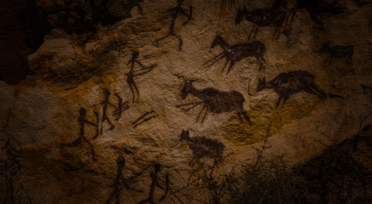
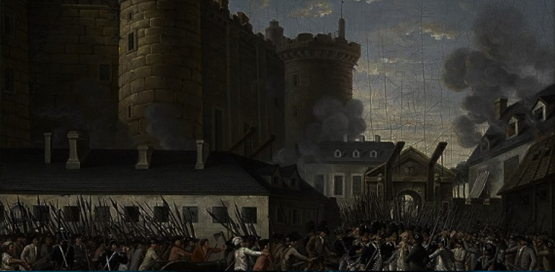
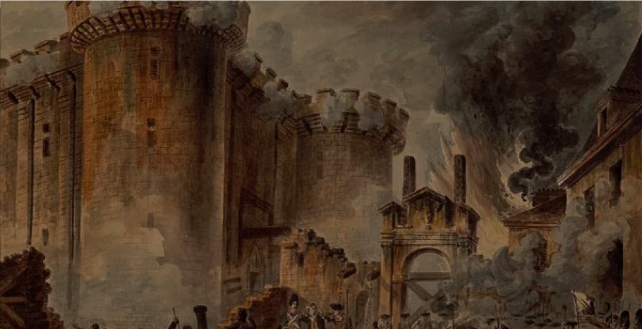
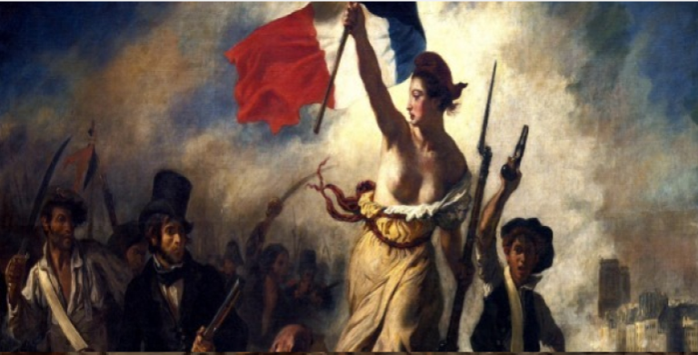

Idade Primitiva
A Idade Primitiva marca o início da humanidade, com o surgimento das primeiras ferramentas e o desenvolvimento da linguagem. Um período fundamental para o início das sociedades humanas.
Saber Mais
Idade Antiga
A Idade Antiga é o período das grandes civilizações, como os egípcios, gregos e romanos. Durante essa era, surgiram as primeiras cidades e impérios, além de grandes avanços na arte e na ciência.
Saber Mais

Idade Média
A Idade Média foi marcada pelo feudalismo e pela expansão do cristianismo, além das Cruzadas. Apesar de ser vista como uma era sombria, houve importantes avanços culturais e intelectuais.
Saber Mais

Idade Moderna
A Idade Moderna trouxe transformações profundas, como o Renascimento, grandes navegações e a Revolução Científica. Período marcado pelo surgimento dos Estados Nacionais.
Saber Mais

Idade Contemporânea
A Idade Contemporânea abrange do final do século XVIII até os dias atuais, incluindo revoluções industriais, guerras mundiais e inovações tecnológicas que moldaram o mundo moderno.
Saber Mais